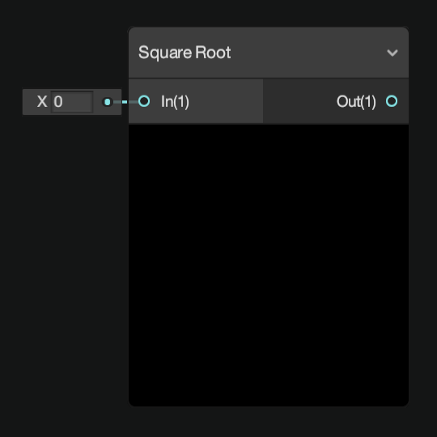
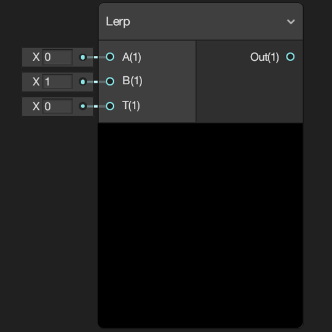
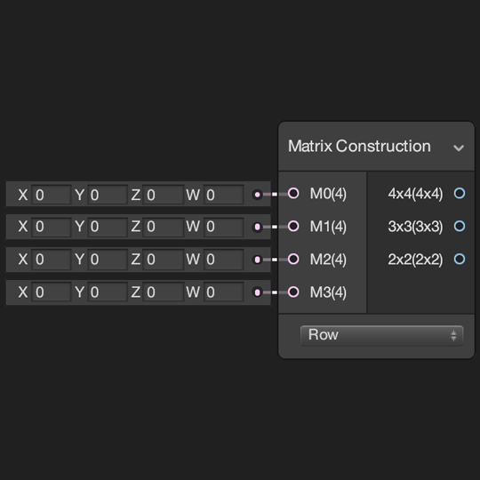
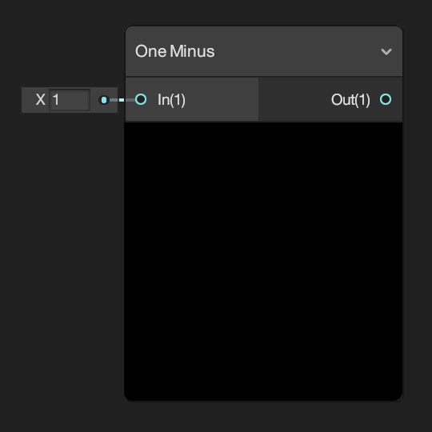
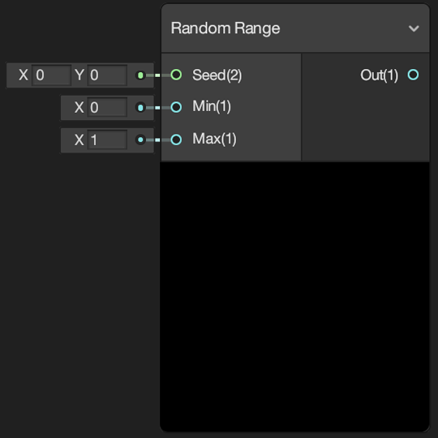
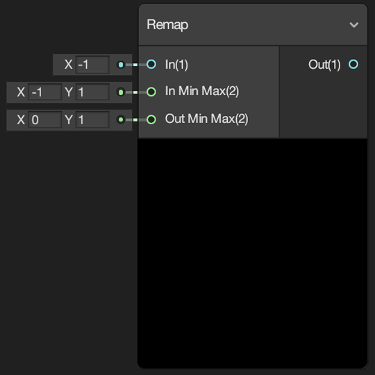
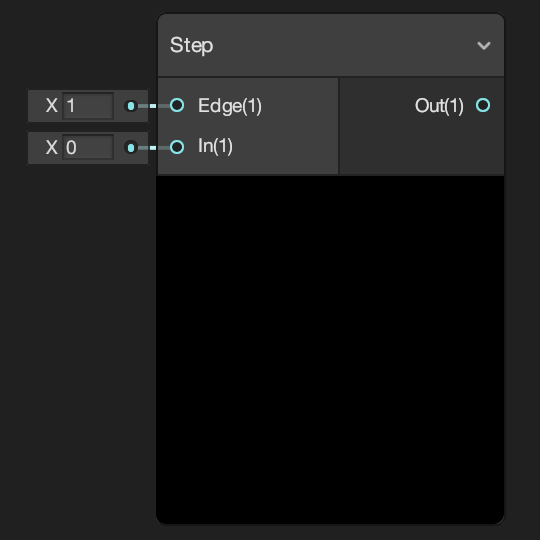
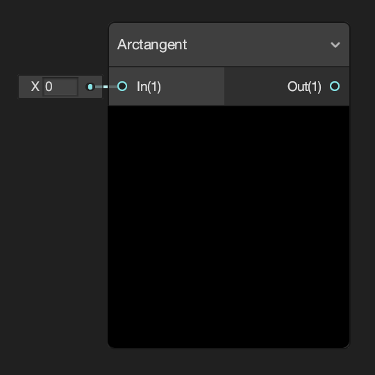
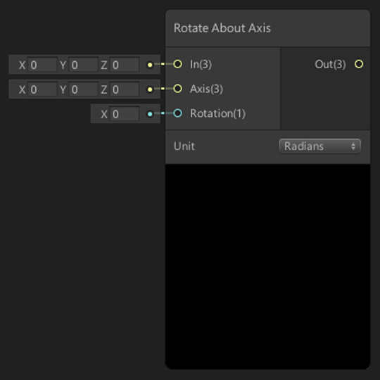

Math Nodes
Advanced
| Absolute | Exponential |
|---|---|
 |
 |
| Returns the absolute value of input In. | Returns the exponential value of input In. |
| Length | Log |
 |
 |
| Returns the length of input In. | Returns the logarithm of input In. |
| Modulo | Negate |
 |
|
| Returns the remainder of input A divided by input B. | Returns the inverse value of input In. |
| Normalize | Posterize |
 |
|
| Returns the normalized vector of input In. | Returns the input In converted into a number of values defined by input Steps. |
| Reciprocal | Reciprocal Square Root |
 |
 |
| Returns the result of 1 divided by input In. | Returns the result of 1 divided by the square root of input In. |
Basic
| Add | Divide |
|---|---|
 |
 |
| Returns the sum of the two input values. | Returns the result of input A divided by input B. |
| Multiply | Power |
| Returns the result of input A multiplied by input B. | Returns the result of input A to the power of input B. |
| Square Root | Subtract |
|  | |
| Returns the square root of input In. | Returns the result of input A minus input B. |
Derivative
| DDX | DDXY |
|---|---|
 |
|
| Returns the partial derivative with respect to the screen-space x-coordinate. | Returns the sum of both partial derivatives. |
| DDY | |
 |
|
| Returns the partial derivative with respect to the screen-space y-coordinate. |
Interpolation
| Inverse Lerp | Lerp |
|---|---|
 |
 |
| Returns the parameter that produces the interpolant specified by input T within the range of input A to input B. | Returns the result of linearly interpolating between input A and input B by input T. |
| Smoothstep | |
 |
|
| Returns the result of a smooth Hermite interpolation between 0 and 1, if input In is between inputs Edge1 and Edge2. |
Matrix
| Matrix Construction | Matrix Determinant |
|---|---|
|  |  |
| Constructs square matrices from the four input vectors M0, M1, M2 and M3. | Returns the determinant of the matrix defined by input In. |
| Matrix Split | Matrix Transpose |
 |
|
| Splits a square matrix defined by input In into vectors. | Returns the transposed value of the matrix defined by input In. |
Range
| Clamp | Fraction |
|---|---|
 |
|
| Returns the input In clamped between the minimum and maximum values defined by inputs Min and Max respectively. | Returns the fractional (or decimal) part of input In; which is greater than or equal to 0 and less than 1. |
| Maximum | Minimum |
 |
|
| Returns the largest of the two inputs values A and B. | Returns the smallest of the two inputs values A and B. |
| One Minus | Random Range |
|  |  |
| Returns the result of input In subtracted from 1. | Returns a pseudo-random number that is between the minimum and maximum values defined by inputs Min and Max. |
| Remap | Saturate |
|  |  |
| Remaps the value of input In from between the values of input Out Min Max to between the values of input In Min Max. | Returns the value of input In clamped between 0 and 1. |
Round
| Ceiling | Floor |
|---|---|
 |
 |
| Returns the smallest integer value, or whole number, that is greater than or equal to the value of input In. | Returns the largest integer value, or whole number, that is less than or equal to the value of input In. |
| Round | Sign |
 |
|
| Returns the value of input In rounded to the nearest integer, or whole number. | Returns -1 if the value of input In is less than zero, 0 if equal to zero and 1 if greater than zero. |
| Step | Truncate |
|  |  |
| Returns 1 if the value of input In is greater than or equal to the value of input Edge, otherwise returns 0. | Returns the integer, or whole number, component of the value of input In. |
Trigonometry
| Arccosine | Arcsine |
|---|---|
 |
|
| Returns the arccosine of each component the input In as a vector of equal length. | Returns the arcsine of each component the input In as a vector of equal length. |
| Arctangent | Arctangent2 |
|  |  |
| Returns the arctangent of the value of input In. Each component should be within the range of -Pi/2 to Pi/2. | Returns the arctangent of the values of both input A and input B. |
| Cosine | Degrees to Radians |
 |
 |
| Returns the cosine of the value of input In. | Returns the value of input In converted from degrees to radians. |
| Hyperbolic Cosine | Hyperbolic Sine |
 |
|
| Returns the hyperbolic cosine of input In. | Returns the hyperbolic sine of input In. |
| Hyperbolic Tangent | Radians to Degrees |
| Returns the hyperbolic tangent of input In. | Returns the value of input In converted from radians to degrees. |
| Sine | Tangent |
 |
 |
| Returns the sine of the value of input In. | Returns the tangent of the value of input In. |
Vector
| Cross Product | Distance |
|---|---|
 |
|
| Returns the cross product of the values of the inputs A and B. | Returns the Euclidean distance between the values of the inputs A and B. |
| Dot Product | Fresnel Effect |
 |
 |
| Returns the dot product, or scalar product, of the values of the inputs A and B. | Fresnel Effect is the effect of differing reflectance on a surface depending on viewing angle, where as you approach the grazing angle more light is reflected. |
| Projection | Reflection |
 |
 |
| Returns the result of projecting the value of input A onto a straight line parallel to the value of input B. | Returns a reflection vector using input In and a surface normal Normal. |
| Rejection | Rotate About Axis |
|  | |
| Returns the result of the projection of the value of input A onto the plane orthogonal, or perpendicular, to the value of input B. | Rotates the input vector In around the axis Axis by the value of Rotation. |
| Projection | Rejection |
|
|
| Returns the result of projecting the value of input A onto a straight line parallel to the value of input B. | Returns the result of the projection of the value of input A onto the plane orthogonal, or perpendicular, to the value of input B. |
| Sphere Mask | Transform |
 |
|
| Creates a sphere mask originating from input Center. | Returns the result of transforming the value of input In from one coordinate space to another. |
Wave
| Noise Sine Wave | Sawtooth Wave |
|---|---|
 |
|
| Returns the sine of the value of input In. For variance, random noise is added to the amplitude of the sine wave. | Returns a sawtooth wave from the value of input In. |
| Matrix Split | Matrix Transpose |
|
|
| Splits a square matrix defined by input In into vectors. | Returns the transposed value of the matrix defined by input In. |
Noise Sine Wave Sawtooth Wave Square Wavve Triangle Wave